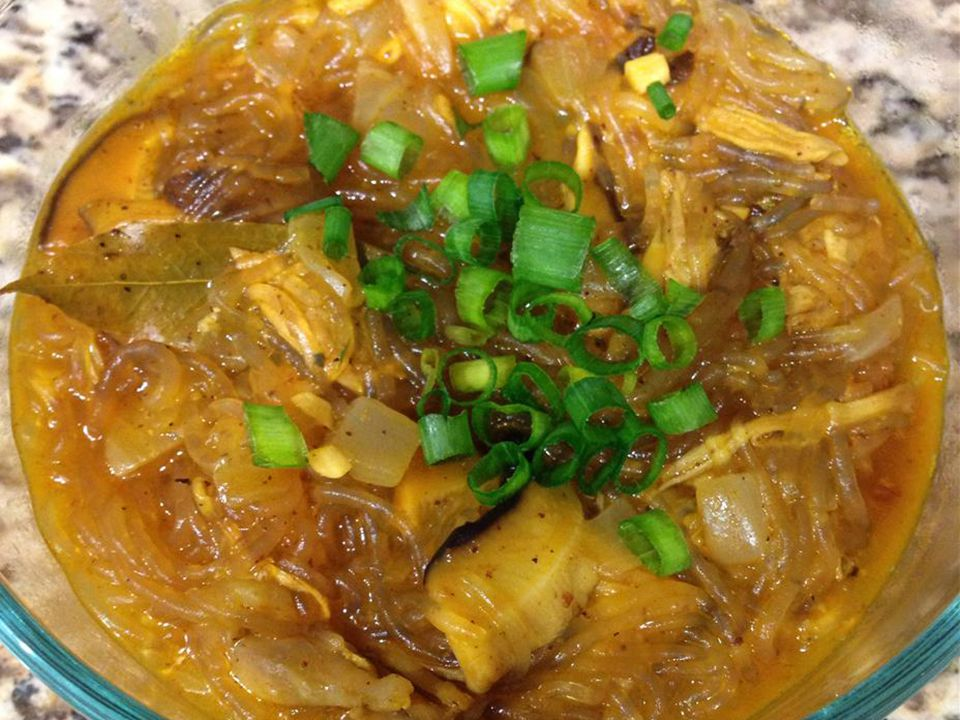

Chicken Sotanghon

Sotanghon soup is a delicious Filipino chicken noodle soup made with cellophane noodles, shiitake mushrooms, and green onions.
Ingredients
- 2 cups water
- 1 teaspoon salt
- 1 pound chicken legs
- 1 ounce dried shiitake mushrooms
- 8 ounces bean thread noodles (cellophane noodles)
- 3 tablespoons olive oil
- 1 onion, chopped
- 2 cloves garlic, minced
- 1 1/2 teasponns achiote powder
- 1 tablespoon fish sauce
- salt and pepper to taste
- 2 (14.5 ounce) cans chicken broth
- 2 green onions, chopped
Directions
- Combine vinegar, soy sauce,1 head garlic, bay leaves, garlic powder, black pepper, and 1 1/2 teaspoons annatto powder in a large bowl. Add chicken, stir to coat with marinade, cover, and refrigerate for at least 4 hours.
- Remove chicken from the marinade and pat dry. Reserve the marinade.
- Heat 2 tablespoons vegetable oil in a large skillet over medium-high heat. Cook chicken in the hot oil until browned, about 4 minutes per side. Remove skillet from heat.
- Heat 1 tablespoon vegetable oil in a small skillet over medium heat. Cook and stir 1 head garlic until browned, about 3 minutes. Add 1 1/2 teaspoons annatto powder; simmer for 3 minutes.
- Pour annatto mixture over chicken and add reserved marinade. Bring to a simmer, cover, and cook until chicken is tender, about 45 minutes. Uncover and cook until sauce has reduced slightly, about 10 minutes.
Back